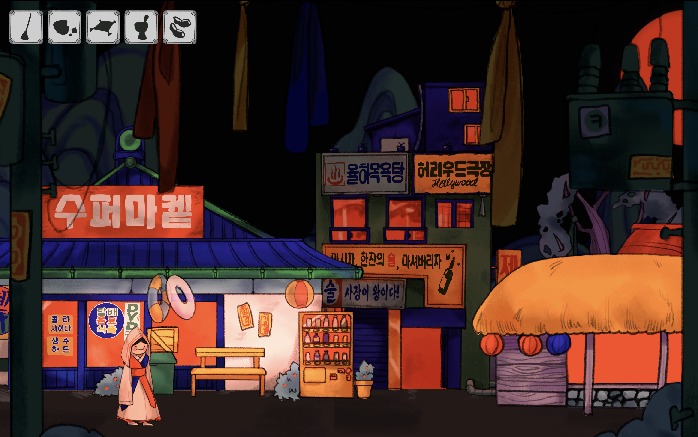

Game Design:
Catching Goblins
년도
작업 도구
크기
지도 교수
Year
Medium
Instructor
2026
Unity, Procreate
Luiz Ludwig

Context
사람들을 괴롭히고 곤란에 빠뜨리지만, 또 마냥 밉지만은 않은 도깨비를 주제로 게임을 제작했습니다. 플레이어는 무당이 되어 마을 사람들을 돕고 도깨비를 찾아내는 과정을 경험하게 됩니다. 이 과정을 통해 한국의 샤머니즘과 전통 설화를 외국인들에게 보다 친근하고 흥미롭게 전달하고자 했습니다.
Dokkaebi (Korean Goblins) are creatures that like to play tricks on people and cause trouble, yet they remain oddly charming. Rather than being truly threatening, they are often portrayed as foolish and playful, making them familiar and approachable figures in Korean folk tales. In the game, the player becomes the Mudang (Korean Shaman), who is on the task to find the Goblins that are hiding in the village.
Strategy
한국의 토속신앙은 오싹하기도 하지만 유니크한 색감과 미감을 가지고 있다고 생각합니다. 이 매력을 전달하기 위해 오방색 등 토속신앙에서 사용되는 색체에 영감을 받아 선명한 원색을 컬러 팔레트를 구상하였습니다. 또한, 한국 시골 풍경을 떠올리며 초가집과 아파트를 함께 담아내여 전통과 현대가 공존하는 이미지를 표현했습니다. 배경에는 산수화를 연상시키는 산을 더해 한국적인 정서를 강화했습니다. 이후, 유니티를 통해 패럴렉스 이펙트와 게임의 UI, 시스템 등을 제작했습니다.
Korean shamanism although might be jarring, also has a unique and beautiful aesthetic. I reinterpreted this visual language by utilizing the strong, vivid color palette of Obangsaek (the five traditional colors), along with symbolic elements such as totem poles and ritual fabric strips believed to ward off spirits. The illustrations were then put into Unity to be developed into a full game experience.
게임 플레이 화면
Game play screen


요소 일러스트레이션
Game assets illustration